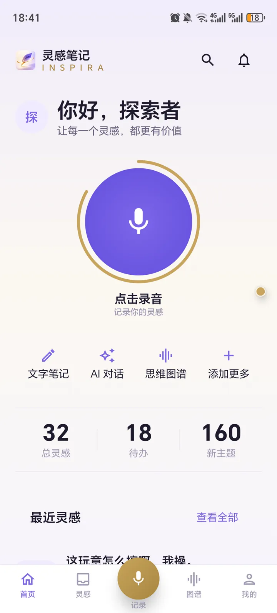
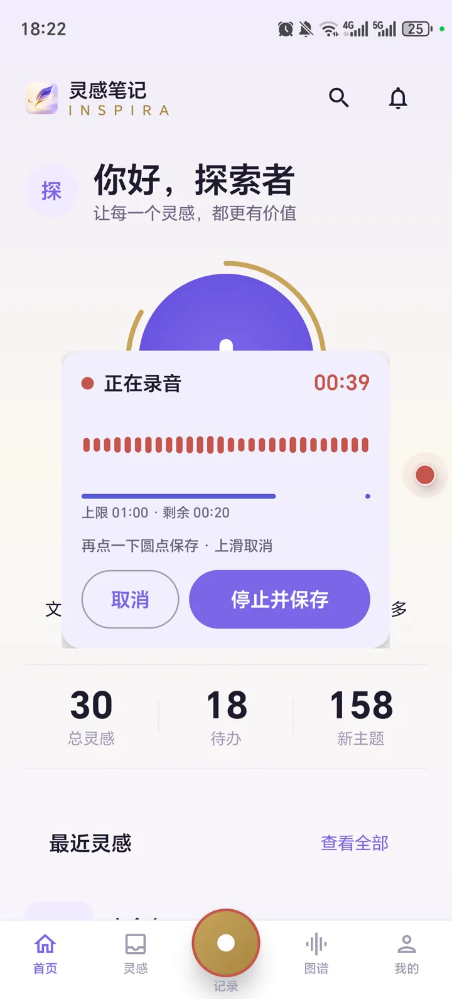
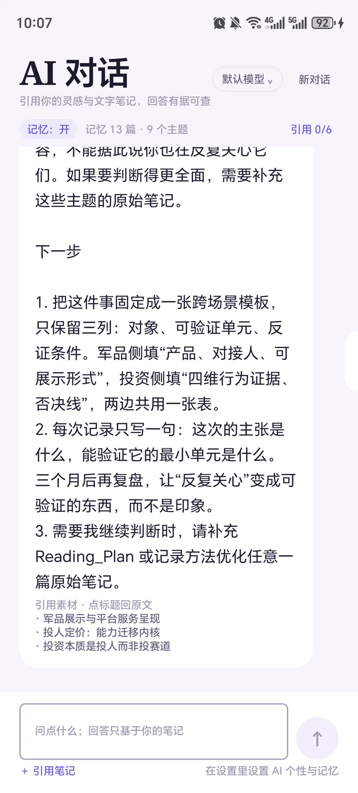

音频与原文是一等公民，
AI 只是增强层。
任何模型失败、超时、缺权限、无网络，都不阻止保存与离开。转写、摘要、标签、向量都可以晚一点再来。
先落盘，再增强INSPIRA · 个人知识网络 · ANDROID
Ideas deserve somewhere to grow.
从锁屏接住一句话，在端侧完成转写、摘要、标签与向量索引；再把语音、长文、主题与双链放进同一张知识网络。 搜得到，问得动，连得起来。

WHY INSPIRA
Notes are where thinking begins —
not where it ends.
只负责记录的产品，在记录超过几百条后会迅速退化成信息坟场：找不到、连不起来、用不上，记录行为本身也会衰减。
inSpira 把捕获当作入口，把结构化、连接、复用当作同等基础的结构层。两条约束不做妥协。
任何模型失败、超时、缺权限、无网络，都不阻止保存与离开。转写、摘要、标签、向量都可以晚一点再来。
先落盘，再增强不配置云端时，捕获、端侧转写、摘要、标签、向量与搜索照常工作。数据默认不出本机；要上云，由你亲手配置。
默认留在本机锁屏、圆点、组合键，
不离开当前界面。
转写、摘要、标签、向量，
端侧优先完成。
双链、图谱、知识体系，
让笔记彼此找到。
混合搜索、AI 对话、待办，
把想法变成下一步。
THE LOOP
不是六个孤立功能，而是一条从“说出口”到“用得上”的路径。每一层都可以独立工作，也可以彼此增强。

01 CAPTURE
入口必须比遗忘更快。inSpira 让录音发生在你正在看的界面之上，而不是另一个需要打开的应用里。
02 STRUCTURE
转写只是开始。摘要、标签与向量在端侧生成，让一条语音从“文件”变成可检索、可连接的知识单元。
03 LONGFORM
一段口语可以长成文章、报告、讲稿、方案或复盘。原文始终保留，AI 只是另一种整理方式。
[[标题]] 保存即建边，可回看上一版。04 CONNECT
标签、双链与语义相似，三种边把零散记录织成网络。你不需要先想好分类，结构会在使用中浮现。

05 REUSE
关键词与语义一起用；问 AI 时，回答只基于你的笔记，引用能点回原文。复用不是再读一遍，而是直接进入下一步。
06 SOVEREIGNTY
没有账号体系，也不需要“同步才能用”。笔记、标签、边、待办、录音都在本机，导出是一份可读的 JSON。
ON-DEVICE AI
权重不打包进 APK。首次使用时按需下载，落在应用私有目录；推理在本地完成，不依赖网络。
未下载或推理失败时，回落云端（若已配置）或规则整理，不阻止保存。
每个文件下载后校验字节数与 SHA-256。坏文件删除并标记失败，不会把不完整模型当成可用。
重试时跳过已校验文件，断点续传接着上次的字节继续。1GB 模型不需要从头再来。
设置页实时显示“下载中 NN%”，完成后能力变为“端侧可用”。摘要与标签共用 Gemma，共享同一进度。
THE PRODUCT
真实设备截图。点击任意界面可放大查看。
PRIVACY BY DEFAULT
inSpira 不是“先同步再离线”，而是从第一秒就在本机。云端是可选通道，不是使用前提。
不注册、不登录、不上传即可使用全部本地能力。
API Key 经 Android Keystore 的 AES-256-GCM 加密，不落明文。
一次导出笔记、标签、待办、知识节点与挂载关系。
二次确认，同时删除本地录音；操作前建议先导出。
云端为显式可选：使用你自己的 OpenAI 兼容 API Key；不配置不影响捕获、端侧转写与本地知识库。
ENGINEERING
从触发、捕获、异步 AI 管道，到本地知识库、图谱布局与混合检索，每一层都为自己的失败模式准备了退路。
Room v8（WAL）+ FTS5 虚拟表；ROM 不支持 FTS5 时自动降级为普通表 + LIKE 关键词腿。
sherpa-onnx SenseVoice Small；LiteRT-LM Gemma 3 1B int4；EmbeddingGemma 2 270M。
OpenAI 兼容协议，默认 DeepSeek；流式 SSE；失败回退端侧或规则整理。
Compose Canvas + 自研 Barnes-Hut 力导布局；后台协程计算，LOD 与按需渲染。
FTS5 BM25 与向量余弦并行，RRF 融合；命中锚点回原文并高亮。
Keystore AES-256-GCM；release 强制空默认 Key，并用护栏单测阻止密钥进入 dex。
PROOF, NOT PROMISES
真机截图、数据库或 dumpsys 证据齐全的项。
受 ROM 限制或需要物理按键，已记录边界与待复验条件。
没跑过就不写成通过；勘误与复核记录保留在仓库中。
真机记录逐项留痕：锁屏录音、端侧转写、长文工作台、图谱、知识体系、AI 对话、待办提醒、混合搜索。
验收口径 · PASS / PARTIAL / NOT-RUNFAQ
还有问题？在 GitHub 仓库提 Issue，或先读一遍 README 里的边界说明。
前往 GitHubAndroid 8.0（API 26）及以上，当前设备构建只打包 arm64-v8a。真机验收使用 Honor ALI-AN00 / Android 15；其他 ROM 可在权限自检页逐项适配。
不必。不下载端侧模型时，可使用已配置的云端通道，或保留原文与手动整理。模型合计约 1GB，在「设置 → 模型管理」按需下载，不打包进 APK。
默认不出本机。云端能力只有在你显式配置 OpenAI 兼容 API Key 后才启用；不配置时，捕获、端侧转写、摘要、标签、向量与搜索照常工作。
数据在本机，建议在「数据与隐私」中导出一次 JSON，换机后导入。导入按主键跳过已存在内容，不覆盖本机修改；API Key 不会随导出迁移，需要重新填写。
普通笔记把“记下来”当作终点。inSpira 把捕获当作入口：端侧结构化、三类连接、混合检索与可引用对话都是同一套结构层，目标是让记录被再次使用。
本仓库目前托管产品介绍与端侧模型 Release；Android 工程源码与设计 / 验收文档会按发布节奏同步。
Your ideas deserve a place to grow.
产品介绍、界面素材与端侧模型 Release 都在 GitHub；后续进展会在仓库更新。
Android 8.0+ · arm64-v8a · 模型按需下载 · 无账号